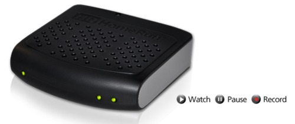
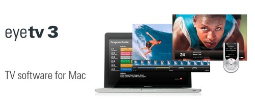
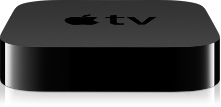

With the ever increasing speeds of cable internet and the ever increasing price of cable TV, many are looking at “cutting the cord”. The idea is to ditch your cable TV service and get your video via the internet. There are many ways to do it, but here’s the one I use.



I very rarely watch live TV, so my modus operandi here is to DVR those shows I like off standard network television. I then tell EyeTV that when it’s done recording, it should convert them to AppleTV format and add them to an iTunes playlist. That playlist is visible on my AppleTV and I can watch the video whenever I want. I also subscribe to a number of wonderful free podcasts (TED, The Random Show, etc.). A whole host of wonderful videos are also available on Youtube and Vimeo, both of which are supported natively in the AppleTV. Many time I like downloading and retaining YouTube and Vimeo videos. Vimeo allows you to do that by default, but you have to use Google Chrome and a Chrome plugin called FastestTube to download videos off Youtube. It doesn’t always works, but seems to most of the time.
There’s a first stab at notes on how to cut the cord. More to come…